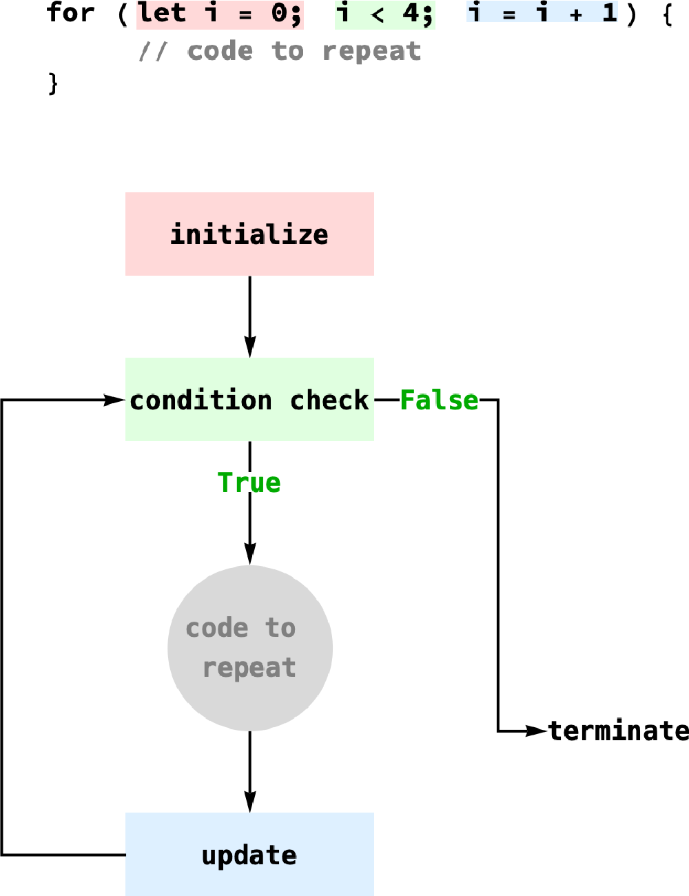

A loop executes code multiple times until a specified condition is met.
Loops make coding more efficient. Instead of manually typing out individual statements by hand, for example, you can write a general form for the statements and have the computer create each one for you.
for() loop
The for() loop is the most commonly used programming loop. The syntax of a for() loop looks like this:
for (initialize; check condition; update) { // code that repeats
}

Ok, so what does that mean?
TODO
Exercise: describe what running the following code will do:
for (let i = 0; i < 4; i = i + 1) {
console.log(i);
}
Increment
This is a very common process, called "incrementing" (repeatedly increasing a variable by a set value), so there are a couple shorthands:
TODO: += and ++ shorthands
Practice
Use for() loops to (approximately) recreate the following sketches:
1.2.3.
As always, there are many possible correct solutions to each problem. Once you have attemped each problem on your own, you can view sample solutions here.